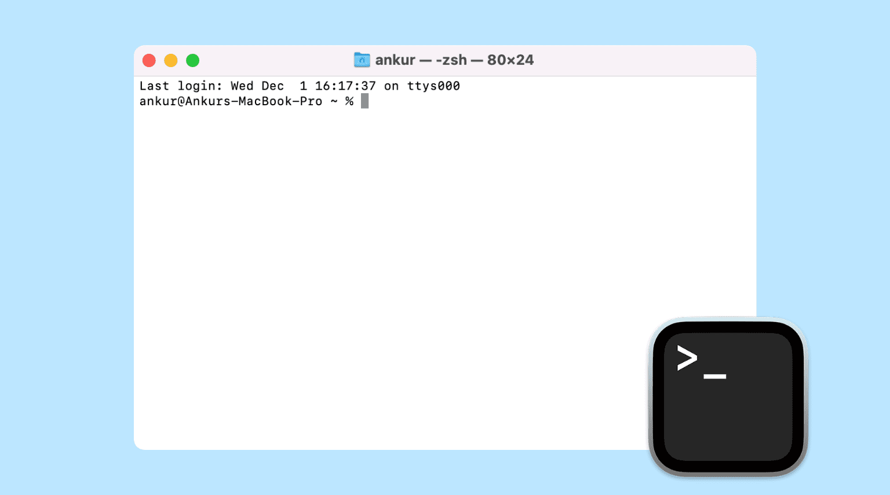

Getting started#
Let’s learn to code! First things first, we need to set up our coding environment. We’ll be using Python, a popular and beginner-friendly programming language (even though I’d rather start teaching with C… 😛). For this, we’ll quickly discuss how to interact with the filesystem using your terminal (aka command line, aka shell), and then install Python. You could just write your code in a text editor (even Word… but please don’t), but we’re going to make your life even easier by using an IDE called VS code.
So our steps are:
Learn some terminal basics
Install Python
Install VS Code
Terminal basics on a Mac#
The terminal is a text-based interface to your computer. You can use it to navigate your filesystem, run programs, and manage files. On a Mac, you can find the Terminal application in the Utilities folder within your Applications folder. Or just search for “Terminal” using Spotlight (Cmd + Space).
By default, the terminal starts in your home directory. You can check where you are by typing:
pwd
This stands for “print working directory” and will show you the path to your current directory.
To list the files and directories in your current location, type:
ls
This will display the contents of the current directory.
To change directories, use the cd command followed by the directory name. For example, to navigate to a folder called “Documents”, you would type:
cd Documents
You can read more about some common terminal commands here: A Beginner’s Guide to the Mac Terminal.
Installing Python#
{kind=link}
Not this kind…#
You can install the latest version of Python from the official website: python.org. Download the installer for macOS and follow the instructions to complete the installation. Make sure to check the option to add Python to your PATH during the installation process. This will allow you to run Python from the terminal.
You can verify that Python is installed correctly by opening a new terminal window and typing:
python --version
This should display the version of Python that you installed.
Installing VS Code#
VS Code is a popular code editor that provides a great environment for writing and debugging code. You can download it from the official website: code.visualstudio.com. Download the installer for macOS and follow the instructions to complete the installation.
Preparing to make your first program#
Now that you have Python and VS Code installed, you’re ready to write your first program! Let’s create a new folder for your coding projects using the terminal within VS code.
Open VS Code and open a new terminal window by going to the menu bar and selecting Terminal > New Terminal or by using the shortcut (Ctrl + `). Then type the following commands to create a new directory and navigate into it:
cd ~/Documents
mkdir learning_to_code
cd learning_to_code
This will create a new directory called “learning_to_code” in your Documents folder and navigate into it.
Now we can clone the learning repository. In the terminal, type:
git clone https://github.com/TomWagg/coding_with_em.git .
This will copy all the files from the repository into your current directory. The dot at the end of the command tells Git to clone the repository into the current directory instead of creating a new folder.
Tip
If you don’t have Git installed, you can install it with Xcode Command Line Tools by typing the following command in the terminal:
xcode-select --install
Finally, let’s open the folder in VS Code. You can do this by going to the menu bar and selecting File > Open Folder… and then navigating to the “learning_to_code” folder you just created. Select the folder and click “Open”. This will make the whole folder your workspace in VS Code and reload things accordingly.
At this point you should see the folder structure in the Explorer pane on the left side of VS Code. You are now ready to start coding!